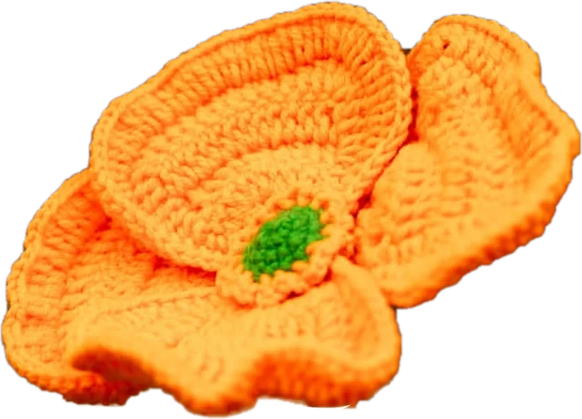

handmade crochet · ur beloved
Flowers you get to keep.

4 big petals handmade,washable 11 inch long stem
Every URB bouquet is crocheted by hand, stem by stem, then wrapped and ribboned. It never wilts, so the feeling stays on the shelf long after the day.
20 bouquetsnever wiltscash on delivery
Every petal stitched by hand, one loop at a time.
what are we making today?
Shop by craft
just finished
New in the basket
real making times, from our posts
How long does it take?
Acrylic and cotton yarns, washed and worn. Slow on purpose.

her story
She crochets everywhere.
“When you have a business, you do work everywhere.”
shop.urb, on Instagram
From Mr Snake, her first big project, to bouquets, stems and cardigans. Follow it post by post.

the parcel
Arrives in the urb box.
Berry pink, with petal prints and a pink handle. Every order is packed in it, so opening it feels like the gift it is.
what are we saying?
By occasion
three steps to a doorstep
Easy as one, two, three
Choose
Pick a bouquet by flower, colour or occasion.
Personalise
Choose a date and add a card message. Want other colours? Ask for a custom piece.
Delivered
Pay on delivery or by transfer, and track it live.
ur beloved.